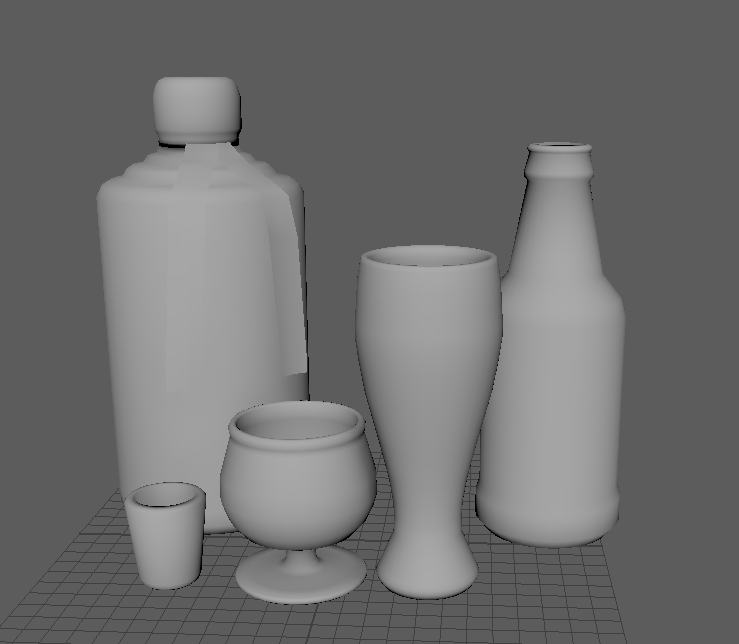
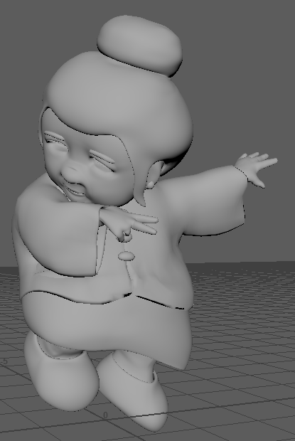
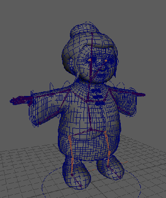

10/2/2020: This week I refined our color script after some changes in our script. After some discussions about colors in character design, I figured I would draft out an image of what the backghround colors in the flashback sequence could look like as well. Finally, I discussed and drew some concepts for having a simple silhouette model for background characters, that we can adjust the scale of to give an illusion of diversity.
Current color script
Color notes for flashback sequence
Thoughts on a silhouette template for BG characters
10/9/2020: This week I worked on some prop designs, and solidified how I the alcohol should look.
Tsingtao and a glass of bai jiu
10/16/2020: This week I turned my concepts into 3D models. I'm currently learning more about Maya and discussing with my team what other background props I should work on. I also made a reference sheet for team members unfamiliar with git/GitHub, which is here.
Tsingtao, bai jiu and their respective glasses
10/23/2020: This week I got further in the modeling process. After presenting our props, I worked to make all the drink props match the artstyle of the short, using a classmates prop as reference. I made sure round edges were exaggerated, borders were thickened, and proportions were squashed to resemble our clay style. I also added a shot glass, and am in the process of modeling a rice wine set. I am also in the process of adding a more essential prop, the flashback radio, using Gina's concept art as reference.

The finished alcohol props.
WIP rice wine set.
WIP radio.
10/30/2020: This week I spent a good amount of time learning the ins and outs of Zbrush and Maya sculpting. In the meantime, I took a few passes at the radio before finalizing it. I also worked on salt props, finalizing the calligraphy sign and the ricewine set. I've made some test sculpts in Zbrush, and am hoping to attempt a background character sculpt to demonstrate how the artstyle should translate to 3D. If this works out, maybe I can make a template human that fits the artstyle that other characters can be sculpted from to achieve a consistent artstyle.
Completed radio prop
Rice wine set.
Calligraphy sign details.
11/5/2020: I'm still trying to figure out how to make anything salvageable in Zbrush. In the meantime, I've made a few salt props as suggested in one of our meetings, which will hopefully fill out some of the background in the flashback scene. I'm learning to make convincing strings and tubes with paths, maybe if a noodles simulation doesn't pan out, I can make a good model using this method. All these props were made using reference that I collected this weekend, and I still have a few pictures I haven't made props from.
Vase prop
Paper wall decor.
Wooden doll with reference.
11/13/2020: I was assigned a lighter workload this week, but I was definitely more busy with technical work than other weeks. We've had a huge amount of merge conflicts I've resolved, and lots of problems involving filesize now that we're using Zbrush projects. We've also had some problems with mysteriously disappearing pushes and teammates making multiple unnecessary commits, but hopefully this should be the last of the big git issues we face. Outside of git, I'm currently learning to create materials in Substance Painter, and alternatively setting materials using Maya. I've been looking forward to skinning all the salt models I've made and being able to see what they'll look like in the final animation. As for my assigned work, I used paths to make more realistic curves for the vase model.
Fixed vase prop
Materials learning process
11/20/2020: I've been mostly working on materials this week. After figuring out how to fix my overlapping UVs, I spent some time attemping to texture my vase with a painted porcelain material. I learned to make glass materials in Maya to texture the tsingtao props, and gave some parts on the inside of the glass different materials to give the appearance of liquid. I still want to add foam to the tsingtao glass and make both glass props have refracted edges. I'm working on the baijiu bottle right now, and making a label texture to apply on the bottle.
First pass vase texture
Tsingtao glass material first pass
Tsingtao bottle material first pass
11/27/2020: Unfortunately, I lost the work for my tsingtao props and had to remake them this week. I feel much better about the foam and refraction on the glass this time around. I've been working on materials and shading this week, both in Maya and Substance Painter. After the tsingtao props, I added salt details to the vase, completely textured the doll prop and started making calligraphy for the luck signs. I plan to add gold details to the corners of the good luck sign and add another character.
New doll texture from reference
Redone tsingtao material
Vase salt
Calligraphy attempt
12/4/2020: This week I started the rigging process for Mai Siu's character model. I've had a bit of trouble with my controls with her hands and arms, so I've restarted the skeleton layout for the character. I foresee her longer sleeves and shorter thumbs being an issue in the completed model, so I've started working to fix these issues. I've added extra edge loops to the hands where I see bending being an issue. Our guest lecturer suggested I add an extra "arm" on each side to control the sleeves, which I'm working on now.
Reference skeleton setup
Hands setup
1/29/2021: I've completed rigging and weight painting Mai Siu's character model this week! Currently, I'm learning to make blend shapes so we can animate her face properly. I had some trouble with references this week, and had to transfer the skeleton and weights from the old model to a reference of the current character model. After some tweaks, she's back to being accurately poseable!

Demonstrating skeleton with new weight painting.
Mai Siu challenges you to a battle!
Maya setup for the last screenshot, showing her extra arm sleeve bones, IK handles for arms legs and sleeves, and updated clothing.
2/5/2021: This week I've spent the majority of my time fixing teammates' git repos after some very strange pointer issues with LFS. I only just now found the quickest way to fix this specific issue, and I'll still have to run a few teammates through this fix next time they try to push. Helping in the #git-issues channel in our team discord has been a big time sink for me, but I've made progress on Mai Sius blendshapes. So far, I've added blendshapes for her mouth movement, and am working on eyebrows and blinking. Fixing the pointer issue has allowed me to fix a previous issue preventing me from progressing on Mai Siu, so this weekend I'll be able to finish up her face shapes.
Chew down blendshape.
Chew up blendshape.
Smile left blendshape
Smile right blendshape
2/12/2021: I've dealt with most teammate's git issues, and have found the solution to most pointer problems. I also made a few more Mai Siu blendshapes, but encountered an issue where her bones and mesh scale at different speeds. I finally found a way to make them match speeds, but I'm still having trouble with the eyeball meshes during scaling. I'm trying to find a solution as soon as possible so she no longer T-poses in the playblast.
How scaling was before.
How it is currently.
demonstrating new eating blendshapes
2/19/2021: Mai Siu is finally fixed and scalable! I had to create & skin new bones for her eyes and redo her eye controllers in order to fix the eye scaling issue. I also had to redo some blendshapes that were from a broken earlier version of the file. I took that time to clean up the inputs for Mai Siu's mesh, deleting broken blendshapes, and making certain shapes symmetrical. I've started to use Char Siu's rig as a reference for Mai Siu's controllers, in order to make our rigs more consistent and easier to use for the animators.
Current rig (scalable!)
Cleaned up blendshapes.
2/26/2021: After I fixed Mai Siu's skeleton and scaling, I found that using her blendshapes would make her scale down to her original size. After finally finding a fix, she's now fully useable in the animation. I also gave her new arm and leg controllers to make animating easier for the team. Again, this week was challenging in terms of guiding teammates through git technical issues, but now I feel much more confident in dealing with the before unfamiliar territory of LFS issues.
Mai Siu trying to open her mouth with the old rig.
Current rig.
3/5/2021: This week has been very difficult to make progress. I had made complete blendshapes and controllers for Mai Siu, and completely redid her skinning too. I saved the file and when I reopened, her mesh was completely unbound and her arm bones were snapped to the origin.
So far I've redone my work 3 or 4 times and have only been able to save the controllers. I've pinpointed the issue to the point where if I attempt to recreate her blendshapes, the file becomes corrupted in this way. I'm still trying to get around this issue, and am looking to possibly
make the blendshapes in her model file rather than the rig to circumvent this. I tried deleting non-deformer history, which worked once but the second time I opened the file it had happened again.

This is about as much progress as I can make before thhe file corrupts.
This is what happens about half the time I save the file.
3/12/2021: Finally! Mai Siu's rig has controllers and her old skinning back. Blendshapes are working now too (but we'll see how long that lasts). Right now, I'm researching how we could make convincing and stylistic steam effects for the flashback transition. I'm thinking of a combination of Lion King's dust effects with some smaller realistic steam effects in AfterEffects.
I'm thinking of recreating this overlay with Perlin noise.
We learned how to recreate this kind of steam in After Effects.
3/19/2021: I've finished the steam transition effects for the flashback transition. I'm still trying to make convincing steam for immediately above the bowl, but even after several attempts I can't seem to make anything that doesn't make the screen transition look weird. By next week I'll have some effects above the bowl, I just need to spend some time experimenting with alternative steam effects.
4/2/2021: This week, I've been experimenting with different steam effects for Char Siu's bowl, and implementing substance painter materials for my older flashback props. I decided to move all my materials to pxrDisney in order to fully use the work I did in substance painter. For the steam, I can't find a suitable effect that doesnt make the transition too confusing, or look like clouds. I'm experimenting with a coffee-like steam trail, but if I can't make that look good I may stick with the particle based steam.
Fixed textures
4/9/2021: After some more AfterEffects experiments, I've decided to use Maya's more advanced particle emitter for the bowl steam, while keeping the 2d steam wipe from before. So far, I'm using a single smoke sprite with fading lifetime opacity and size to create somewhat convincing steam. I'm planning to use an animated spritesheet so each particle fades between states and creates a more realistic looking steam effect.
Animated spritesheet to be used in the final version.

{kind=link}
{kind=link}


{kind=link}
{kind=link}
{kind=link}
{kind=link}
{kind=link}
{kind=link}
{kind=link}
{kind=link}
{kind=link}
{kind=link}
{kind=link}
{kind=link}
{kind=link}
{kind=link}
{kind=link}
{kind=link}
{kind=link}
{kind=link}
{kind=link}
{kind=link}
{kind=link}
{kind=link}
{kind=link}
{kind=link}
{kind=link}
{kind=link}
{kind=link}
{kind=link}
{kind=link}
{kind=link}
{kind=link}
{kind=link}
{kind=link}
{kind=link}
{kind=link}
{kind=link}